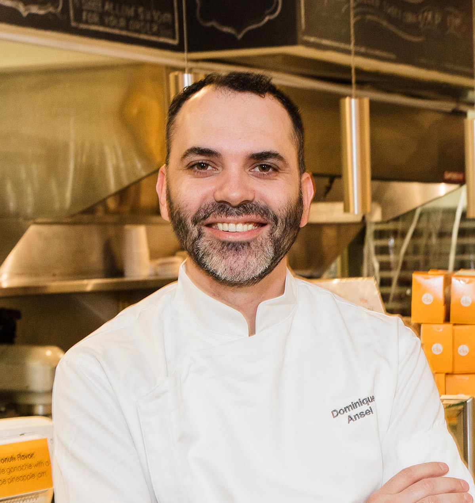

Gordon Ramsay
Chef Ejecutivo
- Es un chef británico mundialmente reconocido, conocido tanto por sus habilidades culinarias como por su
personalidad enérgica y exigente. Ha trabajado en varios restaurantes con estrellas Michelin y es el dueño
de una cadena internacional de restaurantes. Es también conocido por sus programas de televisión como Hell's
Kitchen, MasterChef y Kitchen Nightmares.

José Andrés - Chef Secundario
Chef de Pastelería
- Chef español y embajador global de la cocina moderna. Es conocido por su enfoque en la cocina española, así como
por su labor humanitaria. Ha sido nominado varias veces a los premios James Beard. Su restaurante Jaleo en Washington
D.C. es muy popular, y su estilo combina la gastronomía española con innovaciones contemporáneas.

Dominique Ansel - Chef Secundario
Chef de Repostería
- Chef pastelero francés, famoso por inventar el Cronut, una combinación de croissant y donut. Es conocido por su innovadora
y creativa aproximación a los postres. Su pastelería en Nueva York ha ganado fama internacional y ha recibido numerosos premios.

Alice Waters - Chef Secundario
Chef de Cocina Vegetariana
- Es una chef estadounidense y activista por la alimentación orgánica. Fundadora del restaurante Chez Panisse en Berkeley, California,
ha sido pionera en la cocina de alimentos frescos y orgánicos, defendiendo un enfoque más sostenible y saludable de la gastronomía.

David Chang - Chef Secundario
Chef de Innovación Gastronómica
- Es un chef de origen coreano-estadounidense, conocido por su restaurante Momofuku y por su serie en Netflix, Ugly Delicious. Chang es
reconocido por su estilo culinario que mezcla sabores asiáticos con influencias occidentales.